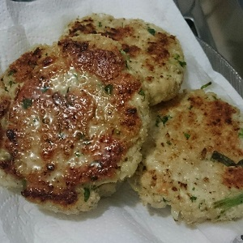
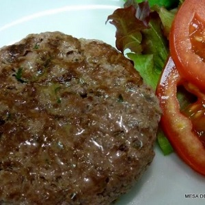
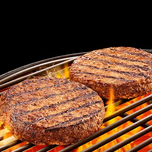

1º Passo - Escolha sua carne!
Temos 3 opções de carne para você. Você pode escolher 1 pelo preço padrão e adicionar outras por um
custo extra.
|
Bifé de hambuguer caseiro de frango

|
Bifé de hambuguer caseiro tradicional

|
Bifé de hambuguer caseiro de costela

|
2º Passo - Escolha seu queijo!
Temos 3 opções de queijo para você. Você pode escolher 1 pelo preço padrão e adicionar outras por um
custo extra.
Você pode escolher entre queijo cheddar, Mussarela e queijo prato.
3º Passo - Escolha sua segunda proteina!
Temos 3 opções de proteina, bacon, presunto e ovo. E o melhor, você pode escolher as duas sem custo
extra. Porções extras serão cobradas a parte.
4º Passo - Monte sua salada!
Temos variedade de itens para a salada, e você pode escolher todas se quiser, hora de deixar o seu
lanche um monstro de sabor e tamanho. As opções são: Tomate, Alface, Cenoura ralada, salada de
maionese e Batata palha.
5º Passo - Escolha sua bebida!
Por ultimo mas não menos importante, escolha o refrigente que irá acompanhar o seu monstro.
Pronto para fazer o seu pedido?
Agora que você já conhece o nosso sistema é hora de esmagar a sua fome! Faça seu pedido clicando aqui.